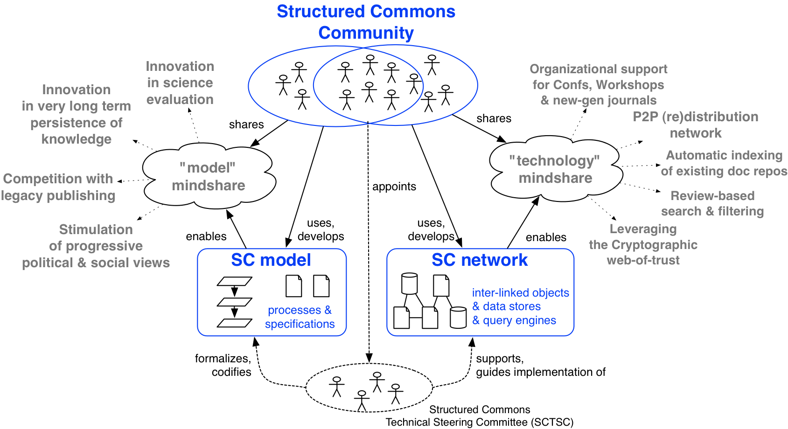

Organization
The Structured Commons project is to develop and promote
the Structured Commons model and network, as a new way for scholars to
"do" academic publishing. See the Mission Statement for an overview of the goals.
The strategy to achieve this is illustrated by the following figure:

In short, the initiative is dual-headed:
- a model-centered approach based on advocacy, tailored to
audiences sensitive to innovation in science
evaluation (how to best perform peer review), innovation in
long-term archival and persistence of the citation network,
competition with the legacy publishing industry, and progressive
evolution of the sociological aspects around science (eg. alternate
performance metrics).
- a technology-centered approach based on gradual adoption
via "grassroots" tooling initiatives, tailored to audiences
sensitive to the practical organization of conferences, workshops
and new-generation journals (eg. how to implement open peer review),
peer-to-peer legal distribution of academic works, structured
re-indexing of legacy document repositories, review-based search &
filtering, and the cryptographic web-of-trust.
The initial drive to achieve this initiative will be provided by the
Structured Commons Technical Steering Committee (SCTSC). This
self-appointed, non-profit group of technology-minded scholars will
push the SC agenda and temporarily hold the responsibility for
coordinating the definition of the SC model and network protocols.
Structured Commons Technical Steering Committee
Mission:
- to advocate the Structured Commons vision and discuss its development;
- to maintain a set of "core" specification documents and
reference/example tool implementations;
- to publish said documentation and code in the public domain.
Current members:
- Sebastian Altmeyer, University of Amsterdam, NL
- Roy Bakker, University of Amsterdam, NL
- Roeland Douma, University of Amsterdam, NL
- Raphael Poss, University of Amsterdam, NL
- Mark Thompson, LUMC, NL
Duration: eventually, this steering committee is intended to be
superseded by a network of organizations that follow the Structured
Commons model and support the Structured Commons network.
Membership: membership to the SCTSC is free but candidate members should be
affiliated with a recognized academic institution, provide evidence of
basic expertise with the dynamics of academic publishing (including,
but not limited to, an established publication record), and "opted in"
by existing members.
Works maintained by the SCTSC